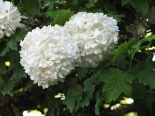

Viorne obier ou Rose de Gueldre ou Boule de neige

Viorne obier ou Rose de Gueldre ou Boule de neige (Viburnum opulus de la famille des Caprifoliacées)
Toxique pour le Korat.
Partie toxique pour les chats en général et le Korat en particulier :
Toute la plante.